Digital Engineering of Critical Components:
Statistical Methods for Optimal Design and Analysis of Heavy-Duty Diesel Pistons, Both in Vitro and in Silico
August 7, 2026
DISTRIBUTION STATEMENT A. Approved for public release; distribution is unlimited. OPSEC10975
Introduction
Piston Fatigue
Fatigue failure is the primary concern for failure of internal combustion engine (ICE) pistons due to cyclic thermal and mechanical loads
- Combustion pressure
- Heat softening
- Thermal stresses


Piston Modeling
Computer models can be used
- Computational fluid dynamics (CFD) for combustion heat transfer and pressure
- Finite element analysis (FEA) of piston temperature and stress
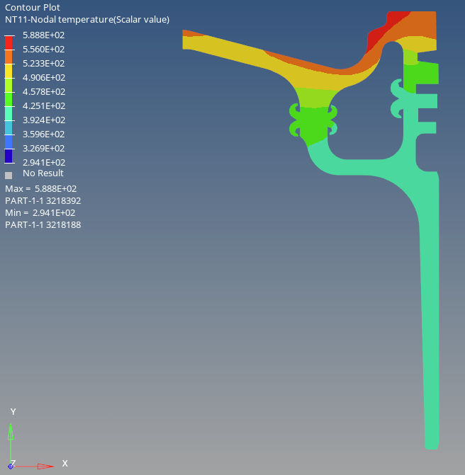
Co-simulation
CFD Submodels
Models controlling specific physics details in the main CFD model- E.g. spray break-up, evaporation, turbulent dispersion, collision, drop drag, spray-wall interaction, wall splash, turbulence, heat transfer
Co-simulation
Co-simulation
CFD Model
- Inputs: submodels, combustion chamber geometry, fuel properties, piston crown surface temperature
- Outputs: pressure, velocity, temperature, heat flux fields in the combustion chamber
Co-simulation
Experimental Testing
- Wireless telemetry system for piston thermocouples and heat flux probes
- Additional pressure and heat flux instrumentation in cylinder
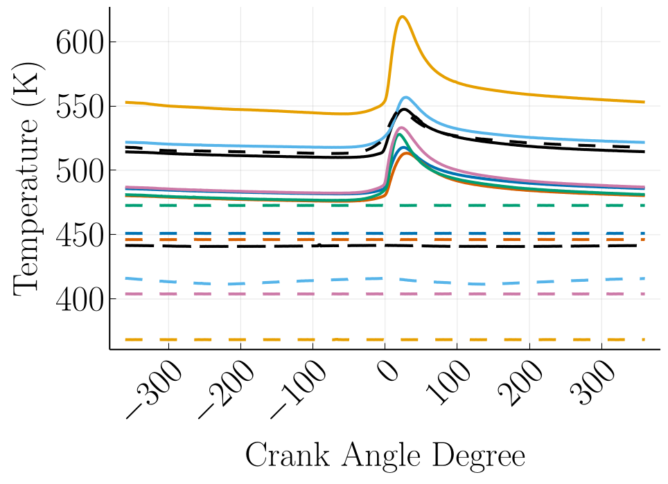
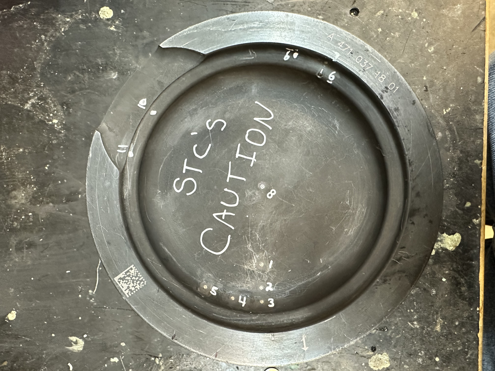
Co-simulation
CFD Validation
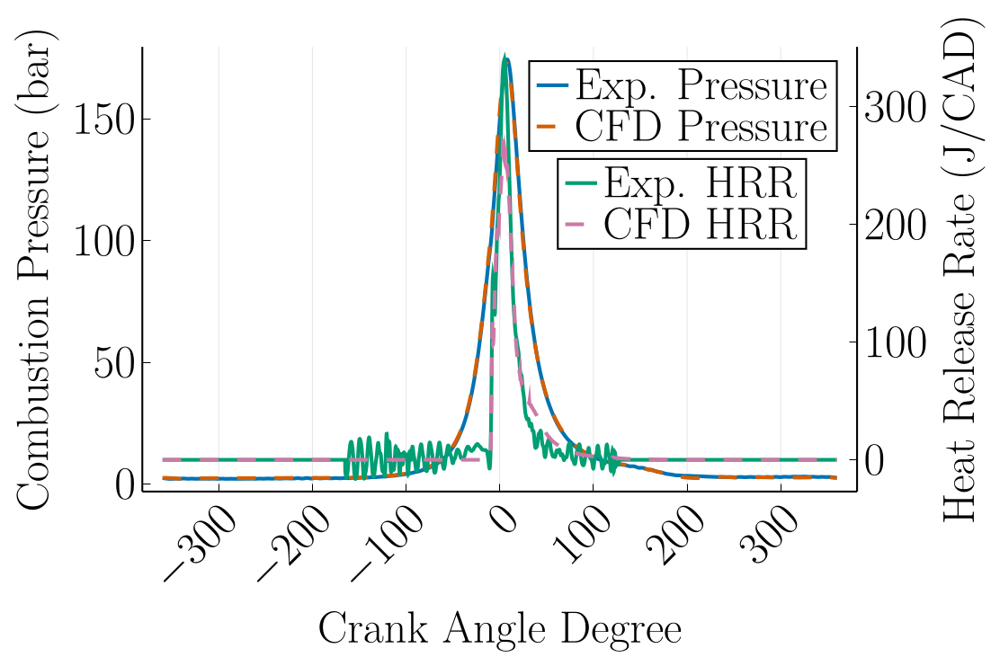
Co-simulation
CFD Results Mapping
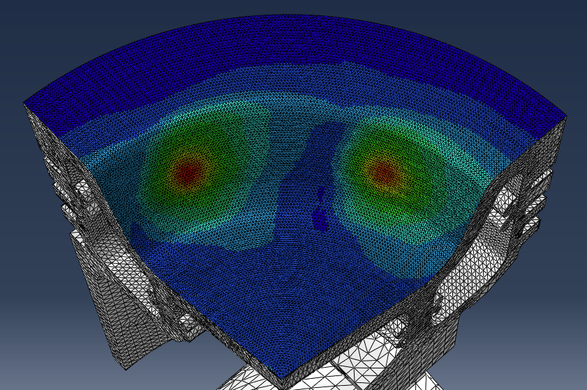
Co-simulation
Finite Element Model
- First order, diffusive, solid tetrahedron elements
- Steady state heat transfer solution
- Inputs: CFD mapping, backside boundary conditions, solid material properties
- Outputs: steady state temperature solution
Co-simulation
Unknown Parameters
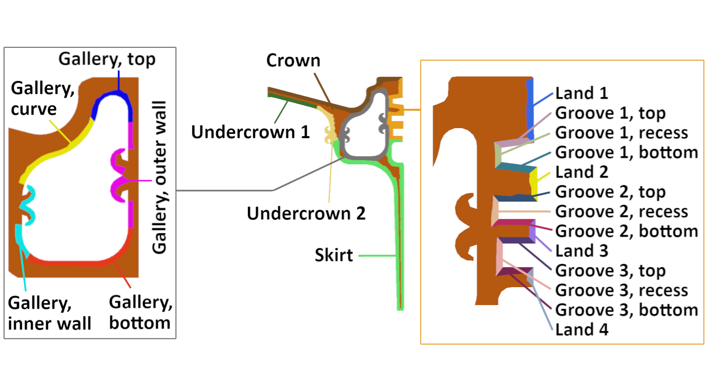
Co-simulation
Model Calibration
- Cycle-averaged experimental temperaure
- FE-predicted steady state temperature
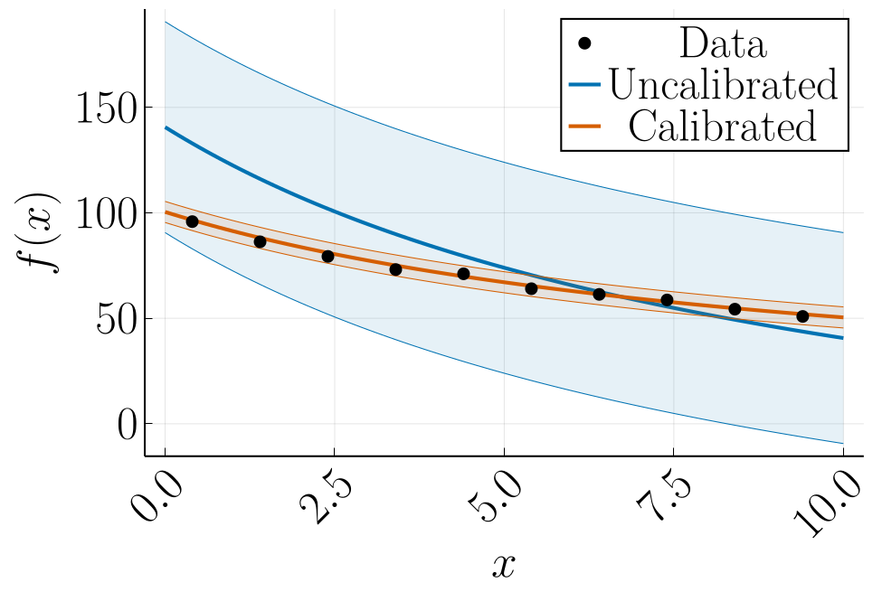
Co-simulation
Calibrated Parameters
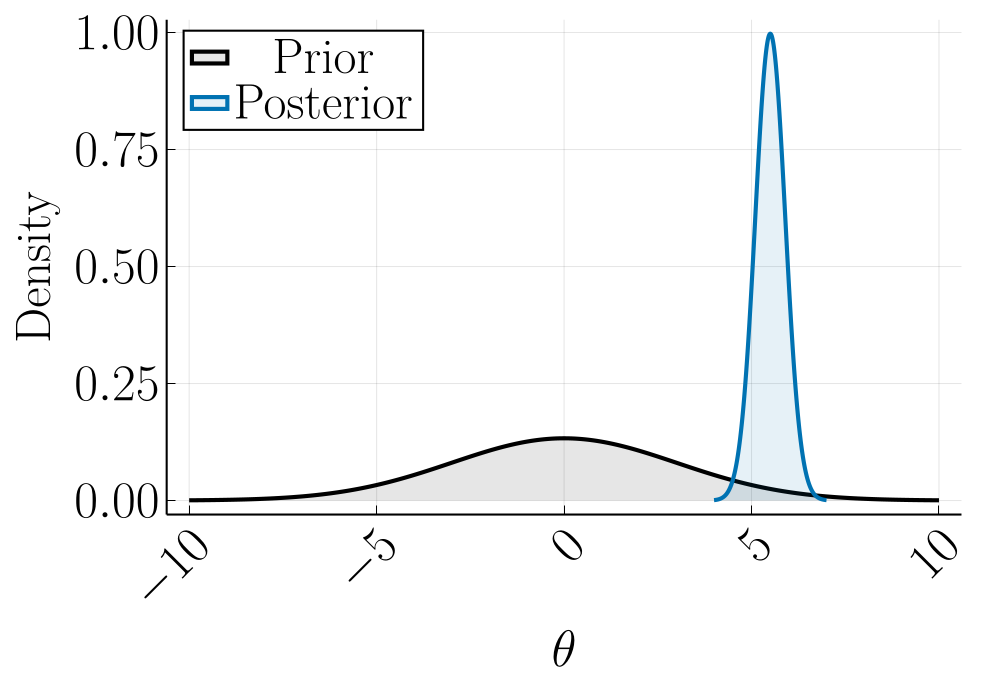
Co-simulation
Co-simulation
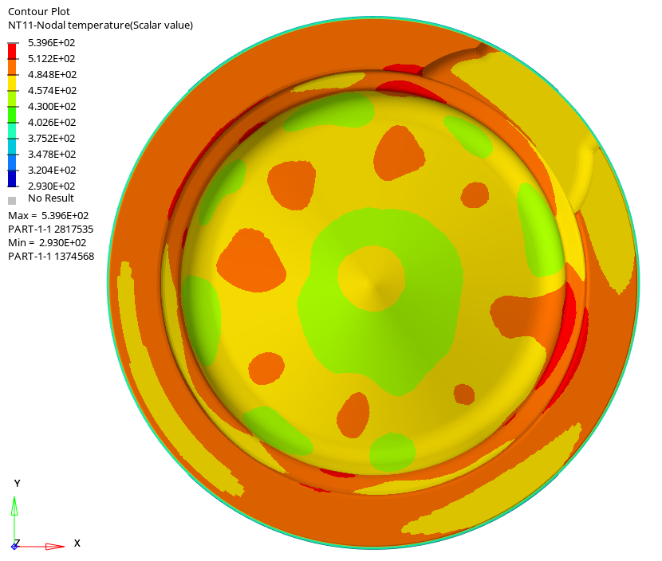
Bayesian Model Calibration
Bayes' Theorem
The objective is to learn about unknown model parameters, $\boldsymbol{\theta} = (\theta_1,\theta_2,\ldots,\theta_P)$ through Bayesian inference
Bayes' Theorem
- Posterior, $\pi(\boldsymbol{\theta}|\mathbf{y})$
- Likelihood, $\pi(\mathbf{y}|\boldsymbol{\theta})$
- Prior, $\pi(\boldsymbol{\theta})$
- Evidence, $\pi(\mathbf{y})$
Bayes' Theorem
Likelihood
For independent and identically distributed (i.i.d.) data $$\pi(\mathbf{y}|\theta) = \prod_{i=1}^N \pi(Y=y_i|\theta)$$Bayes' Theorem
Evidence
For i.i.d. data $$\pi(\mathbf{y}) = \prod_{i=1}^N \pi(Y=y_i) = \prod_{i=1}^N \int_{\theta} \pi(y_i|\theta) \pi(\theta) d\theta$$Bayes' Theorem
Evidence
- $\prod_{i=1}^N \int_{\theta} \pi(y_i|\theta) \pi(\theta) d\theta$ is often intractable
- $\pi(\mathbf{y})$ does not depend on $\boldsymbol{\theta}$, it is a normalizing constant
Bayes' Theorem
Evidence
Numerical methods, like Markov Chain Monte Carlo (MCMC) simulation, can be used with this proportional distribution
- Draw finite samples of $\pi(\boldsymbol{\theta}|\mathbf{y})$
- Can be computationally expensive
Bayesian Model Calibration
Data Representation
Experimental data has the form $$y_i|\mathbf{x}_i = f(\mathbf{x}_i) + \varepsilon(\mathbf{x}_i)$$- $f(\mathbf{x})$ is an unknown function describing the physical phenomenon being measured
- $\varepsilon$ is observational error (aleatoric)
- $\mathbf{x}_i = (x_{1,i},x_{2,i},\ldots,x_{Q,i})$ are independent variables
Bayesian Model Calibration
Computer Model
The computer model, $g(\cdot,\cdot)$ requires specification of unknown parameters, $\boldsymbol{\theta} = (\theta_1,\theta_2,\ldots,\theta_P)$
Computer Model
The new term, $\delta(\mathbf{x})$ is the discrepancy term and describes inaccuracies or missing physics in the computer model (epistemic error)
Bayesian Model Calibration
Data Model
If the observational errors, $\varepsilon$, are independent and identically distributed from a Gaussian distribution, the data can be represented by a multivariate normal distribution $$\mathbf{y}|\mathbf{X} \sim \textrm{MVN} \Big\{ \big[ g(\mathbf{X},\boldsymbol{\theta}) + \delta(\mathbf{X}) \big], \sigma^2 \mathbf{I} \Big\}$$Bayesian Model Calibration
Bayesian Model Calibration
Bayesian Model Calibration
MCMC Simulation
- Numerical approach to draw finite samples of the posterior
- Metropolis-Hastings algorithm
- Random walk: propose a stochastic value for $\boldsymbol{\theta}$ and evaluated whether to accept or reject
- Can be computationally expensive
Surrogate Modeling
- The MCMC approach requires evaluating the likelihood many thousands of times
- Each evaluation of the likelihood requires evaluating $g(\cdot,\cdot)$ for an arbitrary input of $\boldsymbol{\theta}$
- For most computer models it is computationally infeasible to evaulate the computer model directly
- A surrogate model, $\eta(\cdot,\cdot) \approx g(\cdot,\cdot)$ can be used
- Traditionally a Gaussian process surrogate model
Bayesian Model Calibration
Posterior Evaluation
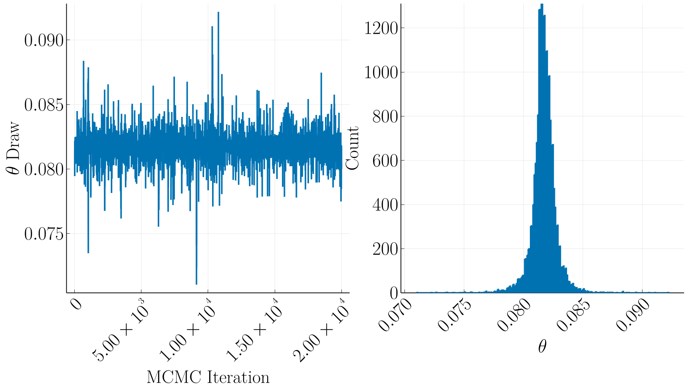
Griddy Gibbs Calibration
An Efficient statistical inference approach for model calibration using griddy gibbs sampling
Motivation
The primary drawbacks of Bayesian model calibration- Computational expense
- Surrogate model training
- Surrogate model evaluation during MCMC
- Identifiability problems caused by the discrepancy term
Motivation
- Precompute to draw finite samples of the posterior distribution much more efficiently
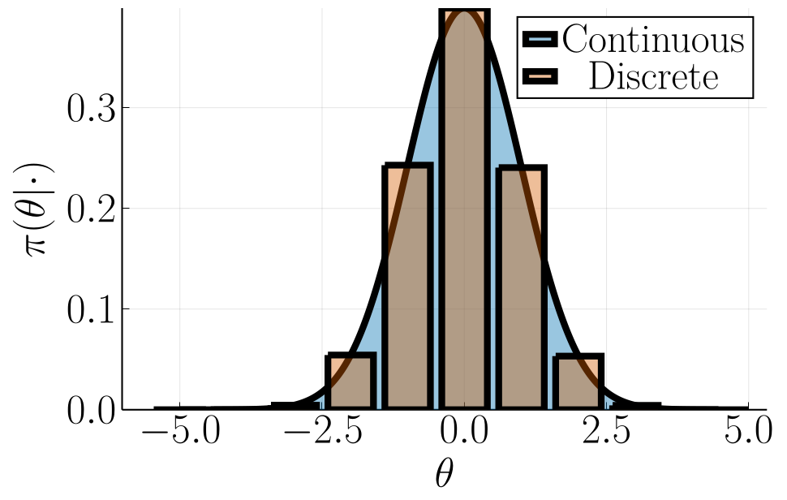
Approach
Griddy Gibbs sampling
Given data model $f(\mathbf{y}|\theta)$ and prior $\pi(\theta)$- Construct grid of $\theta$: $\theta_1,\theta_2,\ldots,\theta_J$
- Compute proportional posterior probability, $q_j = f(\mathbf{y}|\theta_j)\pi(\theta_j)$
- Compute normalized posterior probability, $p_j = \frac{q_j}{\sum_{k=1}^J q_k}$
- Sample from discrete probabilities $p_1,p_2,\ldots,p_J$
Approach
Data Model
We can integrate the discrepancy term from the mean to the covariance $$\footnotesize \mathbf{y} \sim \textrm{MVN}(\mathbf{g} + \boldsymbol{\delta},\sigma^2 \mathbf{I}) \rightarrow \mathbf{y} \sim \textrm{MVN}(\mathbf{g} ,\sigma^2 \mathbf{I} + \boldsymbol{\Sigma})$$- Preserves the accounting for epistemic error
- Makes the MCMC much more stable in terms of identifiability
Approach
Formulation of Sampling Grid
The choice of the grid of discrete values of $\theta$ is important.Consider we can only afford to evaluate 20 grid points
Formulation of Sampling Grid
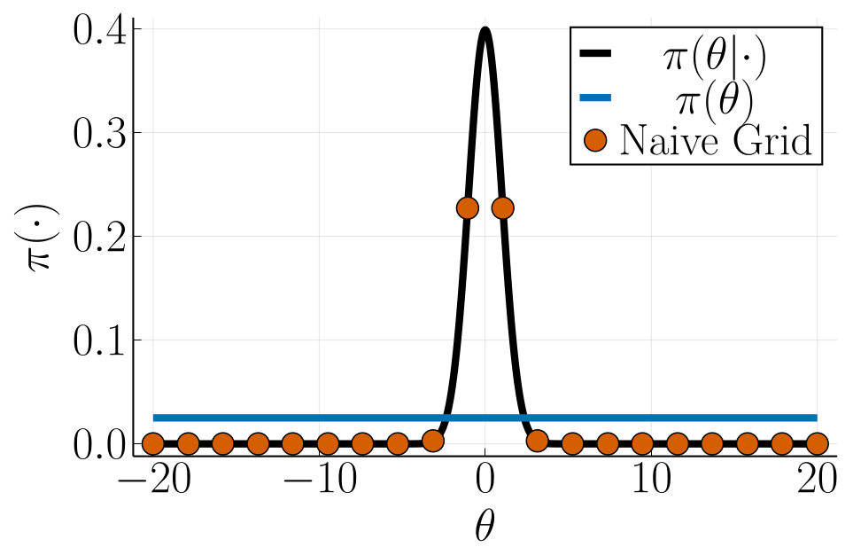
Formulation of Sampling Grid
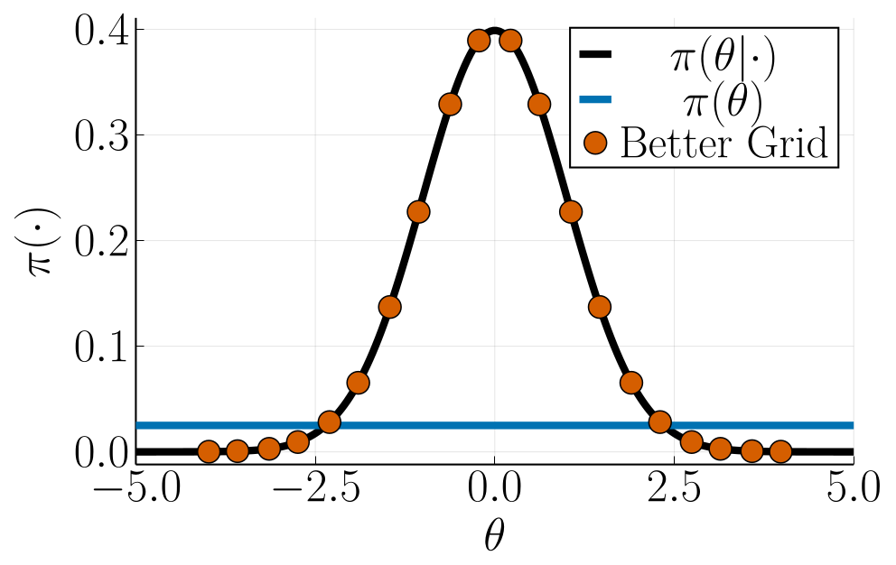
Formulation of Sampling Grid
Find the approximate upper and lower bounds, $\theta_U$ and $\theta_L$ corresponding to the asymptotes of the likelihood
- Train a surrogate model, $\eta$, on $g$
- Find $\widehat{\theta}_{MLE}$ from $L|\eta$
- Step away from $\widehat{\theta}_{MLE}$ until $\frac{\Delta L|\eta}{\Delta \theta} \approx 0$
Evaluation of Asymptotic Bounds
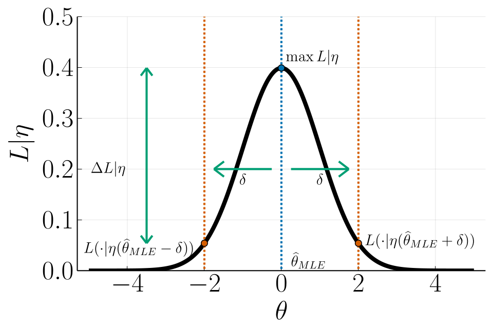
Approach
Likelihood
$$\footnotesize \pi(\mathbf{y}| \boldsymbol{\theta},\sigma^2,\rho,\phi)= \frac{1}{ \sqrt{2\pi \sigma^2|\boldsymbol{\Sigma}^*|}} \exp\left\{-\frac{C(\boldsymbol{\theta},\phi,\rho)}{2\sigma^2}\right\}$$- $\footnotesize C(\boldsymbol{\theta},\phi,\rho)=\{\mathbf{y}-\eta(\mathbf{x}_i,\boldsymbol{\theta})\}^T{\boldsymbol{\Sigma}^*}^{-1}\{\mathbf{y}-\eta(\mathbf{x}_i,\boldsymbol{\theta})\}$
Precomputation
- Precompute $C(\boldsymbol{\theta},\phi,\rho)$
- Over selected grid of $\boldsymbol{\theta}$ and grids of $\phi$ and $\rho$
- Precompute $|\boldsymbol{\Sigma}^*|$
- Over grids of $\phi$ and $\rho$
Case Study
Calibration of three unknown boundary conditions in a piston heat transfer model- Determine the sufficient number of grid points for the griddy Gibbs approach
- Compare the proposed griddy Gibbs approach to traditional Bayesian model calibration
Case Study
- Undercrown BC, $$\theta_1^* = 1000 \textrm{W}\textrm{m}^{-2}\textrm{K}^{-1}$$
- Gallery 1 BC, $$\theta_2^* = 3000 \textrm{W}\textrm{m}^{-2}\textrm{K}^{-1}$$
- Gallery 2 BC, $$\theta_3^* = 2000 \textrm{W}\textrm{m}^{-2}\textrm{K}^{-1}$$
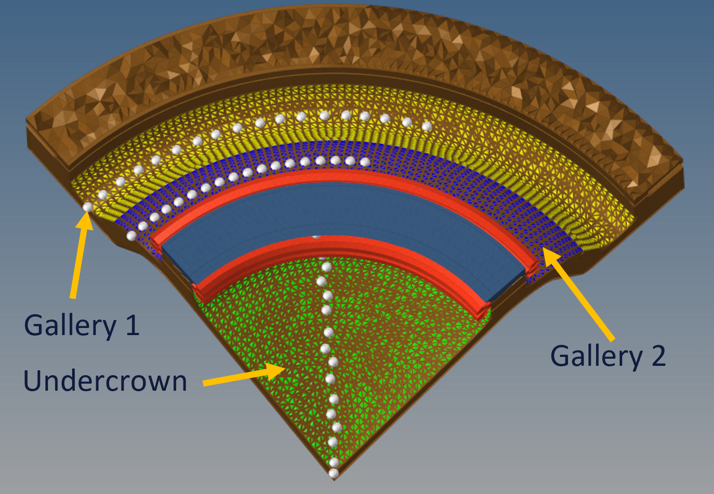
Data Generation
- 6, 15, 27, and 54 temperature responses were considered
- Two sets of data were considered
- Data without discrepancy, $y = g(\mathbf{X},\boldsymbol{\theta}^*) + \boldsymbol{\varepsilon}$
- Data with discrepancy, $y = g(\mathbf{X},\boldsymbol{\theta}^*) + \boldsymbol{\delta} + \boldsymbol{\varepsilon}$
- $\delta(\mathbf{x}) \sim \textrm{GP}(\boldsymbol{0},\Sigma(\mathbf{x},\mathbf{x}'))$
- $\Sigma(\mathbf{x},\mathbf{x}') = 40 \prod_{k=1}^{Q} 0.8^{4 (x_k - x_k')^2}$
- $\varepsilon \sim \textrm{N}(0,0.4)$
Study 1
- For both sets of data (discrepancy and no discrepancy) evaluate the griddy gibbs calibration
- Grid densities ranging from 7 to 49
- Determine sufficient grid density (when results are independent of grid density)
Study 1 Results
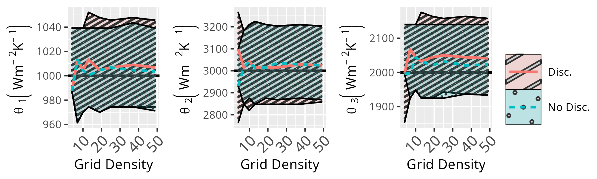
Study 1 Results
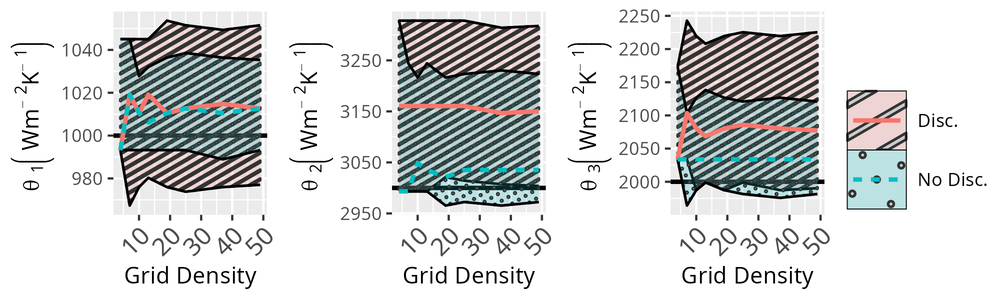
Study 2
- Compare the proposed griddy Gibbs approach to traditional Bayesian model calibration
- Posterior distributions
- Computational cost of each method
Study 2 Results
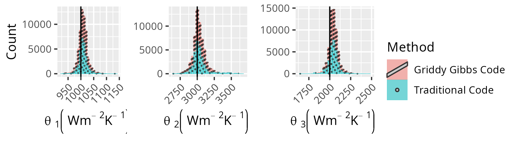
Study 2 Results
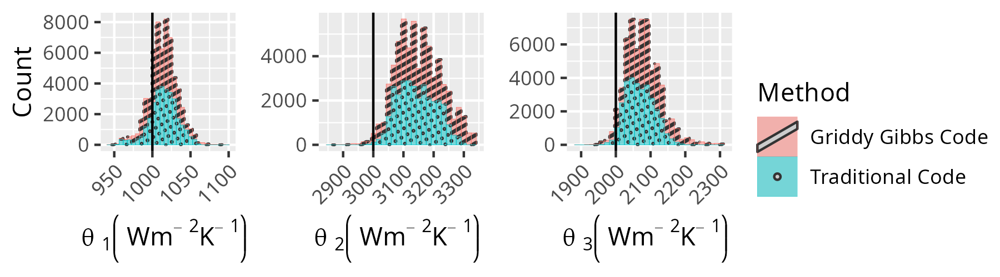
Study 2 Results
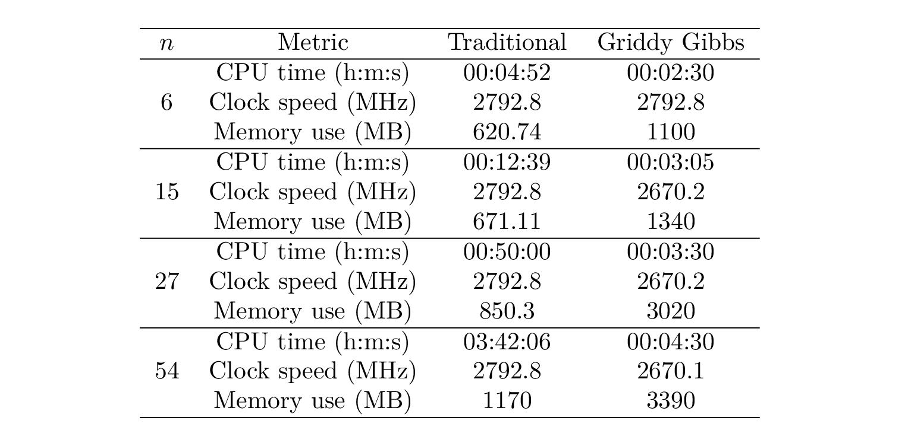
Conclusions
- The griddy Gibbs approach offers comparable posterior estimation to the traditional calibration approach
- Central tendency
- Uncertainty and 95% CI estimation
Conclusions
- The griddy Gibbs approach achieves these estimates with significant computational savings
- Especially true for larger $n$
- Tradeoff in greater memory usage
Acknowledgements
This work was supported by Clemson University's Virtual Prototyping of Autonomy Enabled Ground Systems (VIPR-GS) under Cooperative Agreement W56HZV-21-2-0001 with the US Army DEVCOM Ground Vehicle Systems Center (GVSC).
Disclaimer: Reference herein to any specific commercial company, product, process, or service by trade name, trademark, manufacturer, or otherwise, does not necessarily constitute or imply its endorsement, recommendation, or favoring by the United States Government or the Department of the Army (DoA). The opinions of the authors expressed herein do not necessarily state or reflect those of the United States Government or the DoA and shall not be used for advertising or product endorsement purposes.
DISTRIBUTION STATEMENT A. Approved for public release; distribution is unlimited. OPSEC# (Pending, NOT approved for Release)
References
- Silva, F. Fatigue on engine pistons – A compendium of case studies. Engineering Failure Analysis, 13(3), 480-492, (2006).
- https://www.aa1car.com/library/diesel_piston_damage.htm
- https://www.renntech.org/topic/21928-boxster-engine-rebuilds/
- Gonera, M. & Sandin, O. Thermal analysis of a diesel piston and cylinder liner using the inverse heat conduction method. https://odr.chalmers.se/bitstreams/e1b6ffd9-8fc9-4e3f-bebf-06f06f7d263e/download (2015).
- Du, J. A Wavelet Neural Network Method to Determine Diesel Engine Piston Heat Transfer Boundary Conditions. SAE International Journal of Engines 5, 1740–1746 (2012).
- Kennedy, M. C. & O’Hagan, A. Bayesian Calibration of Computer Models. Journal of the Royal Statistical Society Series B: Statistical Methodology 63, 425–464 (2001).
- Higdon, D., Gattiker, J., Williams, B. & Rightley, M. Computer Model Calibration Using High-Dimensional Output. Journal of the American Statistical Association 103, 570–583 (2008).
- Bayarri, M. J., Berger, J. O. & Liu, F. Modularization in Bayesian analysis, with emphasis on analysis of computer models. Bayesian Analysis 4, 119–150 (2009).
- Tuo, R. & Jeff Wu, C. F. A Theoretical Framework for Calibration in Computer Models: Parametrization, Estimation and Convergence Properties. SIAM/ASA J. Uncertainty Quantification 4, 767–795 (2016).
- Huang, J., Gramacy, R. B., Binois, M. & Libraschi, M. On-site surrogates for large-scale calibration. Applied Stochastic Models in Business and Industry 36, 283–304 (2020).
References
- Konomi, B. A., Karagiannis, G., Lai, K. & Lin, G. Bayesian Treed Calibration: An Application to Carbon Capture With AX Sorbent. Journal of the American Statistical Association 112, 37–53 (2017).
- Pratola, M. T. & Higdon, D. M. Bayesian Additive Regression Tree Calibration of Complex High-Dimensional Computer Models. Technometrics 58, 166–179 (2016).
- Jo, T., Koo, B., Kim, H., Lee, D. & Yoon, J. Y. Effective sensor placement in a steam reformer using gappy proper orthogonal decomposition. Applied Thermal Engineering 154, 419–432 (2019).
- Holland, D. E., Castanier, M. P., Ceccio, S. L., Epureanu, B. I. & Filippi, S. Testing and calibration procedures for mistuning identification and traveling wave excitation of blisks. https://asmedigitalcollection.asme.org/gasturbinespower/article-abstract/132/4/042502/476514 (2010).
- Kammer, D. C. Sensor placement for on-orbit modal identification and correlation of large space structures. Journal of Guidance, Control, and Dynamics 14, 251–259 (1991).
- Penny, J. E. T., Friswell, M. I. & Garvey, S. D. Automatic choice of measurement locations for dynamic testing. AIAA Journal 32, 407–414 (1994).
- Guida, M. & Penta, F. A Bayesian analysis of fatigue data. Structural Safety 32, 64–76 (2010).
- Liu, X.-W., Lu, D.-G. & Hoogenboom, P. C. Hierarchical Bayesian fatigue data analysis. International Journal of Fatigue 100, 418–428 (2017).
- Karolczuk, A. & Słoński, M. Application of the Gaussian process for fatigue life prediction under multiaxial loading. Mechanical Systems and Signal Processing 167, 108599 (2022).
References
- Liu, X.-W. & Lu, D.-G. Survival analysis of fatigue data: Application of generalized linear models and hierarchical Bayesian model. International Journal of Fatigue 117, 39–46 (2018).
- Feng, F. et al. Probabilistic fatigue life prediction in additive manufacturing materials with a physics-informed neural network framework. Expert Systems with Applications 275, 127098 (2025).
- Chiachío, M., Chiachío, J., Rus, G. & Beck, J. L. Predicting fatigue damage in composites: A Bayesian framework. Structural Safety 51, 57–68 (2014).
- Frie, C., Kolyshkin, A., Mordeja, S., Riza Durmaz, A. & Eberl, C. Reduction of testing effort for fatigue tests: Application of Bayesian optimal experimental design. Fatigue & Fracture of Engineering Materials & Structures 46, 4783–4800 (2023).
- Klemenc, J. & Nagode, M. Design of step-stress accelerated life tests for estimating the fatigue reliability of structural components based on a finite-element approach. Fatigue & Fracture of Engineering Materials & Structures 44, 1562–1582 (2021).
- 1. Ahlqvist, M., Weddfelt, K., Norman, V. & Leidermark, D. Probabilistic evaluation of the Step-Stress fatigue testing method considering cumulative damage. Probabilistic Engineering Mechanics 74, 103535 (2023).
- Magazzeni, C. M., Rose, R., Gearhart, C., Gong, J. & Wilkinson, A. J. Bayesian optimized collection strategies for fatigue strength testing. Fatigue & Fracture of Engineering Materials & Structures 46, 228–243 (2023).
References
- Ravikumar, A., Gainey B., Korivi, V., Gingrich, E., Tess, M., Piehl, J., & Lawler, B. Diesel Combustion Modification to Reduce Piston Thermal Loads: A Numerical Study Using 3-D Sector Mesh CFD. In Internal Combustion Engine Division Fall Technical Conference, vol. 89305, p. V001T06A009. American Society of Mechanical Engineers, (2025).
- Ravikumar, A., Gainey B., Gingrich, E., Korivi, V., Tess, M., Piehl, J., & Lawler, B. An Improved CFD Wall Heat Transfer Model Based on a Critical Analysis in Heavy-duty Diesel Engines. Available at SSRN 6408959.
- Gingrich, E. et al. Evaluation of high-temperature martensitic steels for heavy-duty diesel piston applications. SAE Technical Paper Series 2022, (2022).